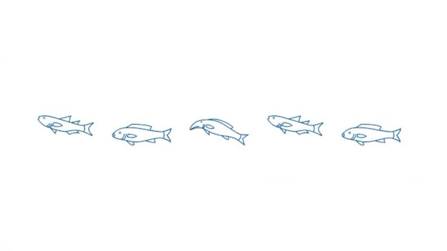
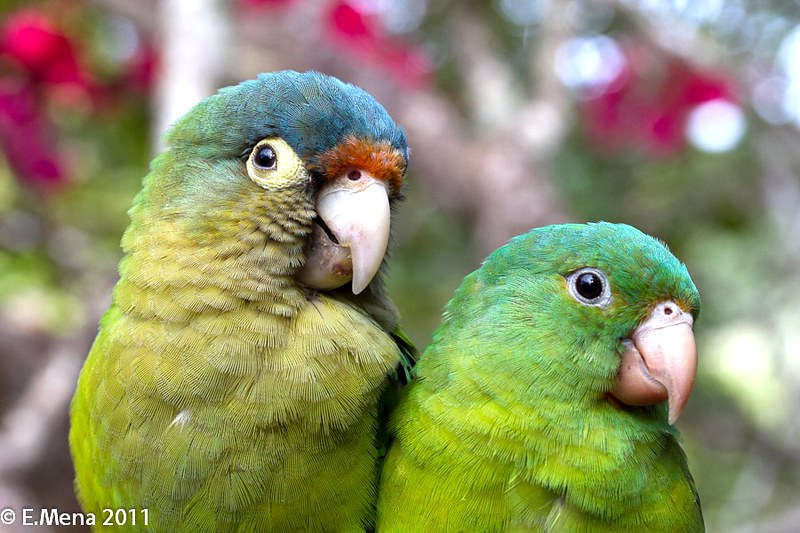
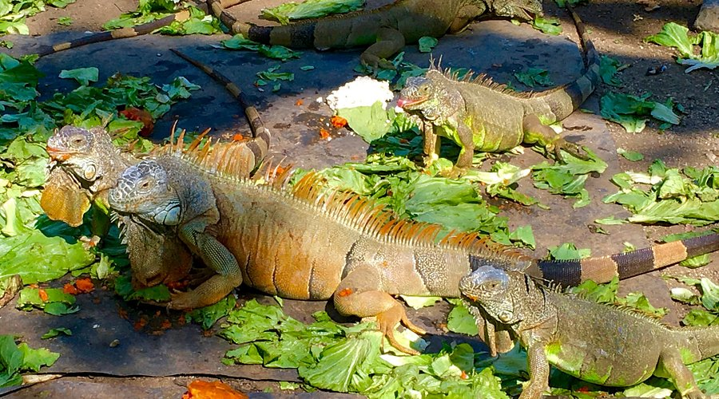
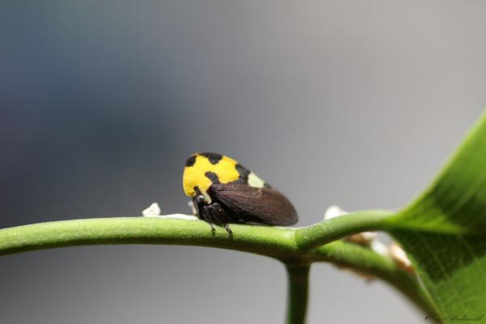
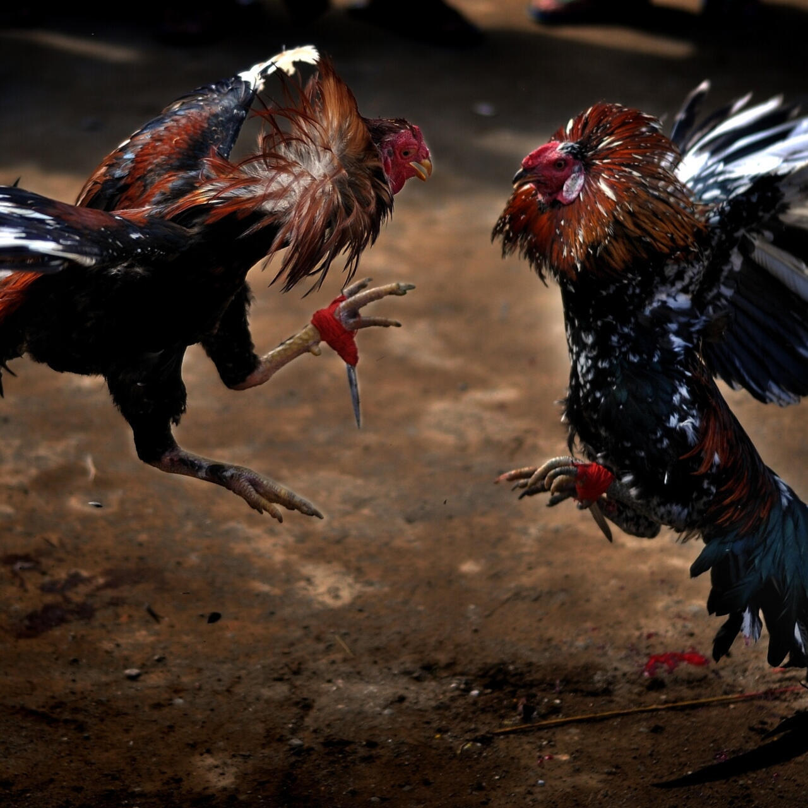

Fauna of Manzanillo
Coastal life in Manzanillo includes birds, reptiles, insects, marine animals, and species connected to daily local life.


Cotorros
Parrots are part of the everyday soundscape, often seen in trees, coastal areas, and warm urban spaces.

Iguanas
Iguanas are common in warm outdoor spaces, often seen resting in gardens, backyards, and near pools.

Periquito de Nanche
The Mexican treehopper is a small insect recognized by its yellow and black color and unusual curved shape.

Gallos
Roosters remain part of daily life, especially in the early mornings when their calls are heard across neighborhoods.
Dolphins and Whales
If you are lucky enough, you may see dolphins or whales along the coast of Manzanillo. Fishermen usually see them more often during fishing trips farther from shore, which reflects the strong marine life of the region.